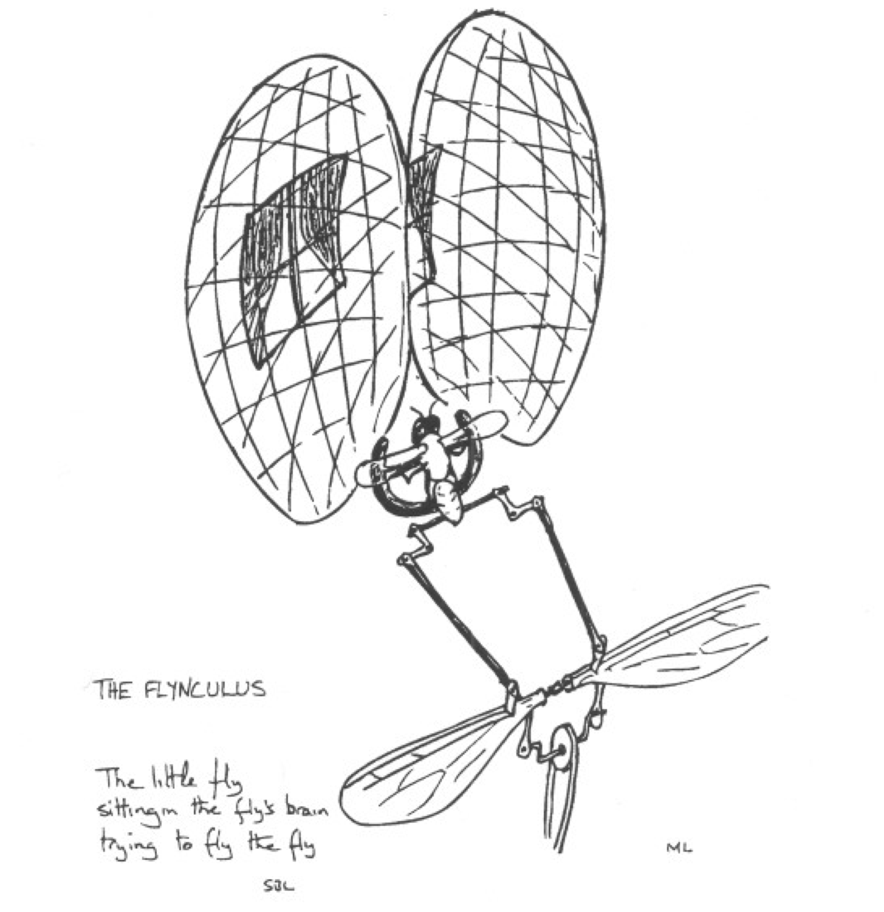
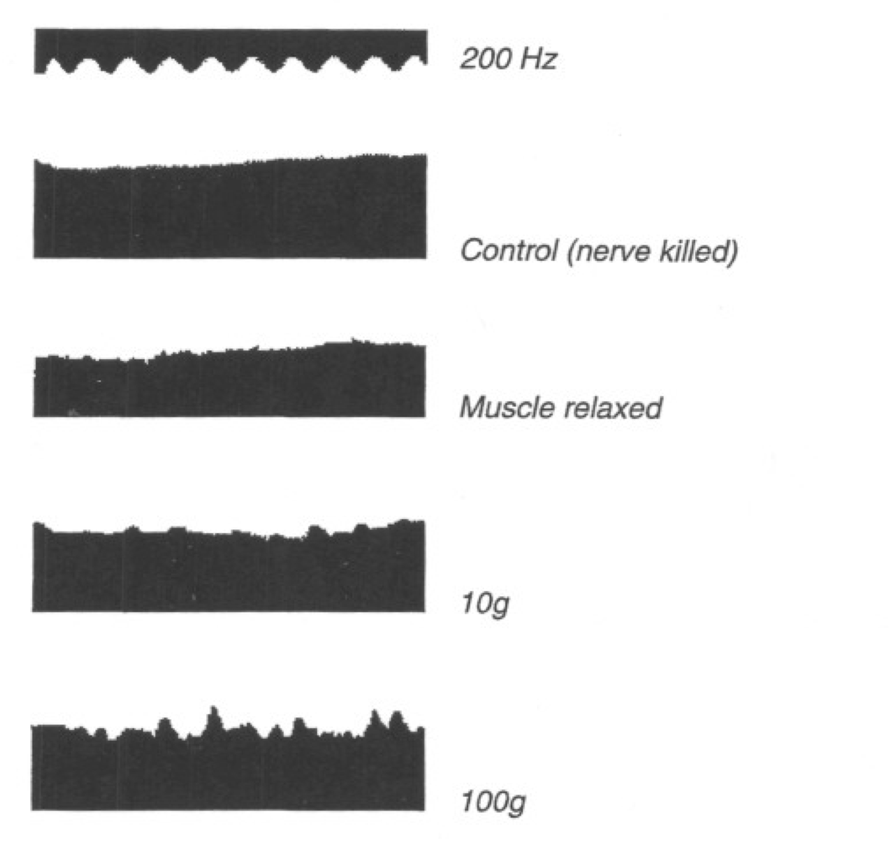
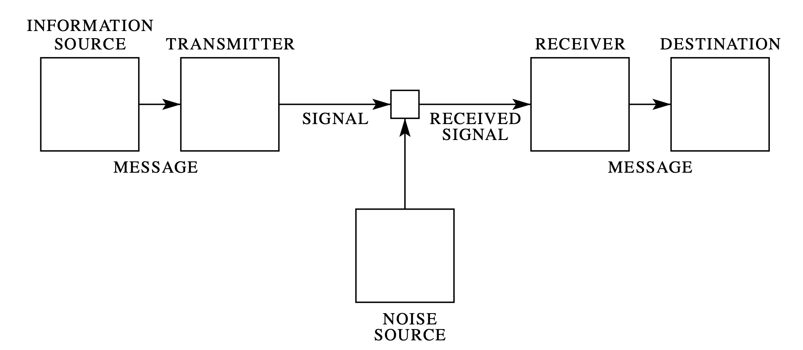

http://bit.ly/Phys141_2
Psychophysics

The psychometric curve. A. The psychometric function plots the percentage of stimuli detected by a human observer as a function of stimulus magnitude. Threshold is defined as the stimulus intensity detected on 50% of the trials. B. Detection and discrimination thresholds depend on the criteria used by individual subjects. Where an ‘ideal’ observer correctly detects the presence and absence of stimuli at the response threshold with equal probability (curve b), an observer who is told to respond to the slightest indication of a stimulus may report many false positives when no stimuli occur and has a lower response threshold (curve a). An observer who is told to respond only when very certain that a stimulus has occurred reports more hits than false positives and has a higher response thresholds (curve c).
Two-alternative forced choice tasks.

The stimulus-response matrix for a stimulus detection task (yes-no) or a categorical judgment task (red-blue). Although there are two possible stimuli and two possible responses, the data represent conditional probabilities in which the experimenter controls the stimuli and measures the subject's responses. The numbers provide examples of behavioral data obtained from a strict observer who responds "yes" less often than the actual frequency of occurrence of the stimulus.
The variability of sensations evoked by a stimulus can be represented with a normal probability function with a mean ($\mu$) and standard deviation ($\sigma$):
\[ f(x)={\frac {1}{\sigma {\sqrt {2\pi }}}}e^{-{\frac {1}{2}}\left({\frac {x-\mu }{\sigma }}\right)^{2}}\]
Gaussian stimulus magnitudes.

Stimulus magnitudes can be represented by Gaussian curves with standard deviations that measure the fluctuation in sensations from trial to trial. The discriminability of a pair of stimuli is correlated with the distance between the two curves. When two stimuli are similar in magnitude, the two Gaussian curves overlap and no single criterion allows error-free responses.
An ideal observer maximizes the number of correct responses and minimizes the total errors, setting the decision boundary at the intersection of the two curves.
A strict observer minimizes the number of false positives but also reduces the total hits, setting the decision boundary to the right (solid line).
A lax observer maximizes the number of hits but also increases the total false positives, setting the decision boundary to the left of the ideal subject.
Flynculus
Physiology
Adrian and Zotterman measured the relation between the force applied to a muscle and the firing rate in a stretch receptor embedded in the muscle. Different forces were generated by hanging weights with different masses from the muscle. This type of experiment established that the frequency of firing in sensory neurons increased with increasing stimulus strength.
Physiology

Action potentials from the lateral eye of the horseshoe crab Limulus . Each trace gives the response to a different light intensity, which was systematically increased by an additional factor of ten from dimmest (bottom) to brightest (top).
Bayes' theorem
\[ P(A\mid B)={\frac {P(B\mid A)P(A)}{P(B)}} \]
where $A$ and $B$ are events and $P(B)\neq 0$.
$\bullet$ $P(A\mid B)$ is a conditional probability : the probability of event $A$ occurring given that $B$ is true.
$\bullet$ $P(B\mid A)$ is also a conditional probability: the probability of event $B$ occurring given that $A$ is true.
$\bullet$ $P(A)$ and $P(B)$ are the probabilities of observing $A$ and $B$ respectively without any given conditions; they are also known as the marginal probability or prior probability.
Proof of Bayes' theorem
$ P(A\mid B)={\frac {P(A\cap B)}{P(B)}} \text{, if } P(B)\neq 0 $
$P(B\mid A)={\frac {P(B\cap A)}{P(A)}} \text{, if }P(A)\neq 0$
Solving for $P(A\cap B)$ and substituting into the above expression for $P(A\mid B)$ yields Bayes' theorem:
\[ P(A\mid B)={\frac {P(B\mid A)P(A)}{P(B)}} \text{ if }P(B)\neq 0 \]
The Boltzmann Distribution

A Boltzmann distribution is a probability distribution that gives the probability that a system will be in a certain state as a function of state energy and temperature:
\[ p_{i}\propto e^{-{\varepsilon _{i}}/{(kT)}} \]
where $p_i$ is the probability of the system being in state $i$, $\varepsilon_i$ is the energy of that state, and a constant $kT$ of the Boltzmann constant and temperature T.
$k_B = 1.4 \times 10^{-23}$ J/K
$k_{B}T \approx 4 \times 10^{-21}$ J
The energy of one blue-green photon ($\lambda$=500 nm) is $4 \times 10^{-19}$ J.
The Boltzmann Factor
The ratio of probabilities of two states is the Boltzmann factor:
\[ {\frac {p_{i}}{p_{j}}}=e^{{(\varepsilon _{j}-\varepsilon _{i})}/{(kT)}} \]
If a system has $M$ possible states, the sum of the state probabilities is normalized:
\[ \sum_{j=1}^{M}{p_i}=1 \]
The probability of being in each state:
\[ p_{i}={\frac {1}{Q}}e^{-{\varepsilon }_{i}/(kT)}={\frac {e^{-{\varepsilon }_{i}/(kT)}}{\sum _{j=1}^{M}{e^{-{\varepsilon }_{j}/(kT)}}}} \]
The Exponential Atmosphere

From Feynman's Lectures in Physics.
Mass of one oxygen molecule is $5\times10^{-23}$ g.
Mass of one hydrogen molecule is $3\times10^{-24}$ g.
Does Feynman's drawing make sense?
The altitude of each gas molecule is associated with a gravitational potential energy: $E=mgh$.
Assuming a uniform atmospheric temperature $T$, the probability that a molecule is at height $h$ is:
\[ p(h) \propto e^{-mgh/kT} \]
For this probability density to be properly normalized:
\[ p(h) = \frac{e^{-mgh/kT}}{\int_{h=0}^{\infty} e^{-mgh/kT}dh} \]
The expectation value for the altitude of a gas molecule depends on its mass: $ \left< h \right> = \frac{kT}{mg} $.
Deriving Boltzmann

$N$ weakly interacting systems divide total $E$ energy among them
Say that you have $N$ particles that are given a total amount of energy $E$.
These particles are able to freely exchange energy among them, but are constrained to quantal energy levels.
How many particles can you expect to find at each energy level?
What is the probability of a particle having a certain amount of energy?
Deriving Boltzmann
$N$ weakly interacting systems divide total $E$ energy among them
Mass Conservation:
$ \sum_{s} n_s = N $
Energy Conservation:
$ \sum_{s} n_s \varepsilon_s = E $
Probability of being in state $s$:
$ p_s=n_s/N $
Normalization condition:
$ \sum_s p_s = 1 $
Average Energy of a Particle:
\[ \left< \varepsilon \right> = \sum_s p_s \varepsilon_s =\frac{\sum_s n_s\varepsilon_s}{\sum_sn_s} \]
Deriving Boltzmann
What is the probability of an $n_s$ distribution?
The number of ways you can arrange a number of particles at each energy level is given by combinatorics:
\[ W=\frac{N!}{n_1!n_2!n_3!...} \]
We need to maximize $\log{W}$
\[ \log{W} = \log{N!}-\sum_s \log{n_s!} \]
Stirling's formula
\[ N!=\left( \frac{N}{e} \right)^N \]
No more factorials!
\[ \log{W} = N(\log N -1 ) - \sum_s n_s (\log n_s -1 )\]
Lagrange Multipliers

For the function $w=f(x,y,z)$ constrained by $g(x,y,z)=c$, the maxima and minima are those points where $\nabla f$ is parallel to $\nabla g$: \[ \nabla f - \lambda \nabla g = 0 \]
Lagrange Multipliers
Add $N$ (Conservation of Mass) and $E$ (Conservation of Energy) to $\log{W}$, each multiplied by a Lagrange multiplier ($\alpha$ and $\beta$). The most probable $W$ is that for which:
\[ \frac{d}{dn_s} \left(\log{W} - \alpha \sum_s n_s - \beta \sum_s \varepsilon_s n_s \right) = 0 \]
Calculating for each $n_s$ gives:
\[ \log{n_s}+ \alpha + \beta \varepsilon_s = 0 \]
The Boltzmann distribution:
\[ n_s =e^{-\alpha}e^{-\beta \varepsilon_s} \]
Claude Shannon
Mathematical theory of communication
Shannon Entropy

Entropy of a coin toss
The entropy $H(X)$ of a random variable $X$
\[ H(X)=-\sum_{x \in X}^{} p(x) \log_2{p(x)} \]
\[ H(X)=\left< \log_2{p(x)} \right> \]
The entropy of a two-state system
\[ H(X)= -p_A \log_2{p_A} -p_B \log_2{p_B} \]
Maximize Shannon Entropy with Lagrange Multipliers
Maximize entropy: \[ H(p)=-\sum_{i=1}^{N} p_i \log{p_i} \] Normalization constraint: \[ \sum_{i=1}^{N} p_i = 1 \] Fixed mean energy constraint: \[ \sum_{i=1}^{N} p_i \varepsilon_i = E \]
The Boltzmann Distribution
\[ p_i \propto e^{-\lambda \varepsilon_i} \]
An exponential distribution of energies is the distribution with the least bias.